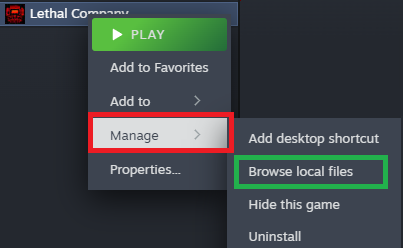

Please make sure to remove your current Mods. To avoid any possibility of conflicts.

Copy the Following Files/Folders to the opened Windows Explorer window:
If you want to use r2modman:
Note: You need to create a profile through r2modman beforehand; otherwise, you won't be able to use it.
| Name | Description |
|---|---|
| SaveData | This shortcut takes you to your game saves within Lethal Company. Additionally, some configurations related to Mods may be found here. |
You don't need to install files that are not mentioned in steps 2 and 3.